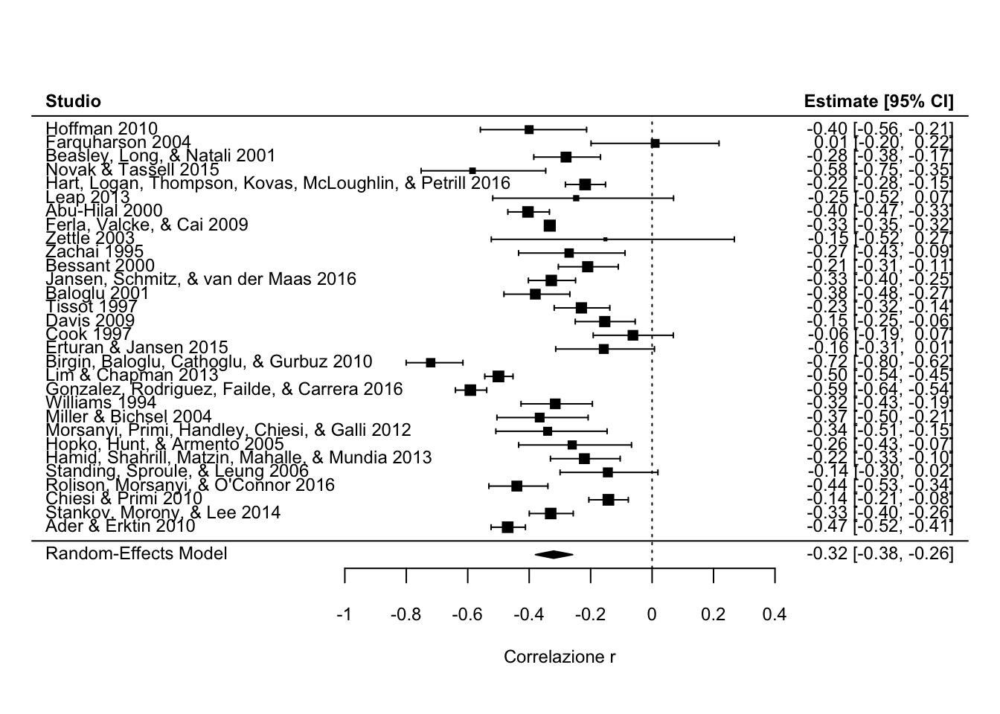
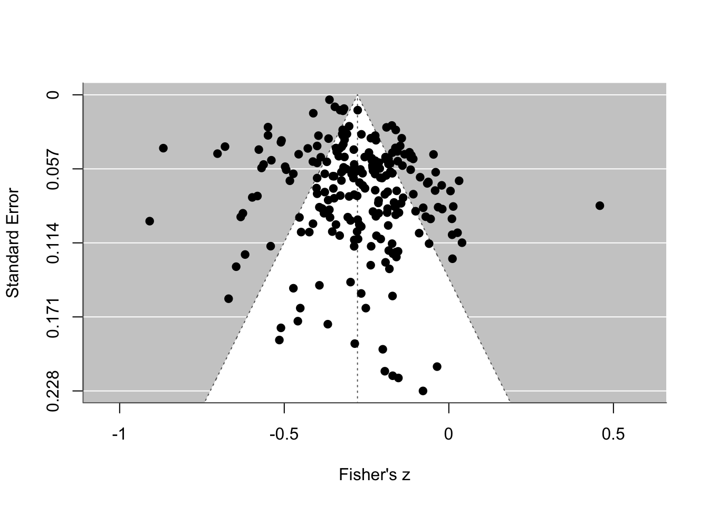
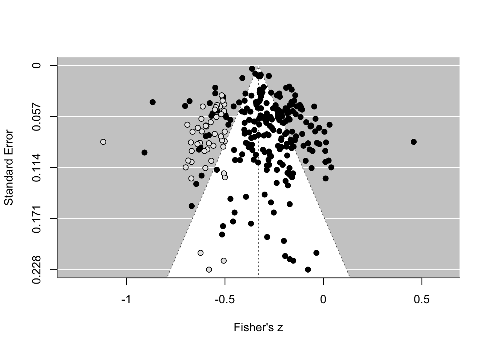
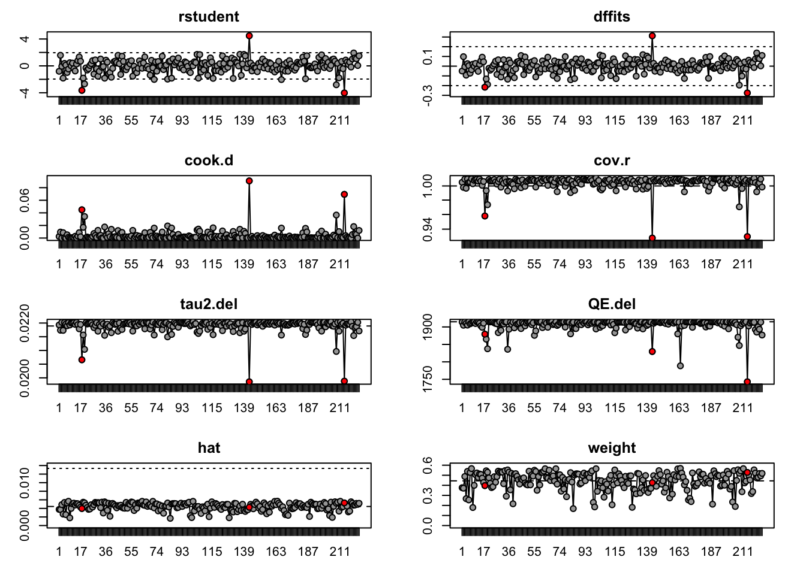

rm(list=ls()) # pulizia environment
# Installare i pacchetti solo se non sono già presenti
# install.packages("metafor")
# install.packages("psymetadata")
library(metafor)
library(psymetadata)Esercizio Meta-Analisi: Math anxiety e achievement
Obiettivo dell’esercizio
In questo esercizio useremo il dataset barroso2021, incluso nel pacchetto psymetadata.
Il dataset contiene risultati da 225 studi, per un totale di 747 effect size, sulla relazione tra ansia matematica e rendimento matematico.
Gli effect size sono già espressi come correlazioni trasformate in Fisher’s z.
L’obiettivo è imparare a:
preparare un dataset in vista di una meta-analisi;
aggregare più effect size provenienti dallo stesso studio;
stimare un modelli fixed e random-effects con
metafor;interpretare output, eterogeneità e prediction interval;
visualizzare i risultati;
analizzare il publication bias;
introdurre una meta-regressione esplorativa.
ImportantMessaggio centrale
Stimare una meta-analisi in R può richiedere una sola riga di codice. Interpretarla correttamente richiede però una buona systematic review, decisioni metodologiche esplicite e riferimenti teorici robusti.
1. Setup
Installiamo e carichiamo i pacchetti necessari.
2. Caricare il dataset
dat <- data.frame(barroso2021)Esploriamo la struttura del dataset.
str(dat)'data.frame': 747 obs. of 11 variables:
$ es_id : int 1 2 3 4 5 6 7 8 9 10 ...
$ study_id : int 6 6 19 31 37 37 37 47 47 47 ...
$ author : chr "Hoffman" "Hoffman" "Farquharson" "Beasley, Long, & Natali" ...
$ pub_year : int 2010 2010 2004 2001 2015 2015 2015 2016 2016 2016 ...
$ continent : int 1 1 1 1 1 1 1 1 1 1 ...
$ grade : int 5 5 5 3 5 5 5 3 3 3 ...
$ low_ability: Factor w/ 2 levels "1","2": 2 2 2 2 2 2 2 2 2 2 ...
$ teachers : int 1 1 2 2 1 1 1 2 2 2 ...
$ ni : int 70 70 89 278 30 30 30 506 502 493 ...
$ yi : num -0.4 -0.448 0.01 -0.288 -0.466 ...
$ vi : num 0.01493 0.01493 0.01163 0.00364 0.03704 ...head(dat) es_id study_id author pub_year continent grade low_ability
1 1 6 Hoffman 2010 1 5 2
2 2 6 Hoffman 2010 1 5 2
3 3 19 Farquharson 2004 1 5 2
4 4 31 Beasley, Long, & Natali 2001 1 3 2
5 5 37 Novak & Tassell 2015 1 5 2
6 6 37 Novak & Tassell 2015 1 5 2
teachers ni yi vi
1 1 70 -0.40005965 0.014925373
2 1 70 -0.44769202 0.014925373
3 2 89 0.01000033 0.011627907
4 2 278 -0.28768207 0.003636364
5 1 30 -0.46604720 0.037037037
6 1 30 -0.69314718 0.037037037summary(dat) es_id study_id author pub_year
Min. : 1.0 Min. : 6.0 Length:747 Min. :1993
1st Qu.:187.5 1st Qu.: 631.0 Class :character 1st Qu.:2008
Median :374.0 Median :1061.0 Mode :character Median :2013
Mean :374.0 Mean : 987.8 Mean :2010
3rd Qu.:560.5 3rd Qu.:1420.0 3rd Qu.:2016
Max. :747.0 Max. :1600.0 Max. :2018
continent grade low_ability teachers
Min. :-999.000 Min. :1.000 1: 18 Min. :1.000
1st Qu.: 1.000 1st Qu.:3.000 2:729 1st Qu.:2.000
Median : 1.000 Median :5.000 Median :2.000
Mean : -5.925 Mean :3.862 Mean :1.922
3rd Qu.: 3.000 3rd Qu.:5.000 3rd Qu.:2.000
Max. : 6.000 Max. :6.000 Max. :2.000
ni yi vi
Min. : 13.0 Min. :-0.9730 Min. :3.336e-05
1st Qu.: 69.0 1st Qu.:-0.3654 1st Qu.:3.565e-03
Median : 151.0 Median :-0.2448 Median :6.757e-03
Mean : 642.2 Mean :-0.2495 Mean :1.423e-02
3rd Qu.: 283.5 3rd Qu.:-0.1368 3rd Qu.:1.515e-02
Max. :29983.0 Max. : 0.5668 Max. :1.000e-01 Variabili importanti:
study_id: identificativo dello studio;es_id: identificativo dell’effect size;author: autore/autori dello studio;pub_year: anno di pubblicazione;ni: numerosità campionaria;yi: effect size osservato, già in Fisher’s z;vi: varianza dell’effect size.
3. Una riga = uno studio o un effect size?
Contiamo quanti effect size e quanti studi unici abbiamo.
# Numero Effect Size
nrow(dat)[1] 747# Numero studi
length(unique(dat$study_id))[1] 225
NoteNota metodologica
Molti studi riportano più di un effect size. Il modello ideale sarebbe quindi un modello multilevel, ad esempio con rma.mv().
In questa esercitazione introduttiva però useremo una strategia più semplice: aggregare gli effect size dello stesso studio, assumendo una correlazione tra effect size pari a rho = 0.50.
4. Effect Size
In questo dataset yi è già in Fisher’s z.
# Esempio: da correlazione r a Fisher's z
## install.packages("psych")
library(psych) # pacchetto per la trasformazione in Fisher's z
r_example <- -0.30
z_example <- fisherz(r_example)
z_example[1] -0.3095196# Back-transformation: da Fisher's z a correlazione r
fisherz2r(z_example)[1] -0.3
TipInterpretazione
Nel modello lavoreremo sulla scala Fisher’s z, ma per interpretare i risultati trasformiamo la stima finale di nuovo in correlazione r.
5. Aggregazione degli effect size within-study
Creiamo prima un oggetto escalc, cioè un dataset che metafor riconosce come contenente effect size e varianze.
Poiché yi e vi sono già disponibili, usiamo measure = "GEN".
dat_es <- escalc(
measure = "GEN",
yi = yi,
vi = vi,
data = dat
)Ora aggreghiamo gli effect size all’interno di ciascuno studio.
dat_agg <- aggregate(
dat_es,
cluster = study_id,
rho = 0.50
)Controlliamo il risultato.
nrow(dat_agg)[1] 225head(dat_agg)
es_id study_id author pub_year
1 1.5 6 Hoffman 2010
2 3.0 19 Farquharson 2004
3 4.0 31 Beasley, Long, & Natali 2001
4 6.0 37 Novak & Tassell 2015
5 10.0 47 Hart, Logan, Thompson, Kovas, McLoughlin, & Petrill 2016
6 13.0 69 Leap 2013
continent grade low_ability teachers ni yi vi
1 1 5 2 1 70 -0.4239 0.0112
2 1 5 2 2 89 0.0100 0.0116
3 1 3 2 2 278 -0.2877 0.0036
4 1 5 2 1 30 -0.6691 0.0247
5 1 3 2 2 492 -0.2214 0.0012
6 1 2 2 2 40 -0.2522 0.0270
WarningAttenzione
L’aggregazione è una semplificazione didattica. In un’analisi reale, questa scelta dovrebbe essere giustificata.
6. Meta-analisi con rma()
Stimiamo un modello random-effects.
res <- rma(
yi = yi,
vi = vi,
method = "REML", # per calcolare una meta-analisi random-effects
data = dat_agg
)
res # Risultati
Random-Effects Model (k = 225; tau^2 estimator: REML)
tau^2 (estimated amount of total heterogeneity): 0.0219 (SE = 0.0026)
tau (square root of estimated tau^2 value): 0.1480
I^2 (total heterogeneity / total variability): 93.80%
H^2 (total variability / sampling variability): 16.13
Test for Heterogeneity:
Q(df = 224) = 1914.7881, p-val < .0001
Model Results:
estimate se zval pval ci.lb ci.ub
-0.2775 0.0112 -24.8723 <.0001 -0.2994 -0.2557 ***
---
Signif. codes: 0 '***' 0.001 '**' 0.01 '*' 0.05 '.' 0.1 ' ' 1
NoteCosa stiamo stimando?
Il modello stima l’effetto medio della relazione tra ansia matematica e rendimento matematico.
Poiché gli effect size sono Fisher’s z, anche la stima del modello è inizialmente sulla scala Fisher’s z.
7. Interpretare l’output
Estraiamo alcuni elementi principali.
res$b # effetto medio stimato in Fisher's z [,1]
intrcpt -0.2775353res$se # errore standard[1] 0.01115839res$ci.lb # limite inferiore CI[1] -0.2994054res$ci.ub # limite superiore CI[1] -0.2556653res$pval # p-value[1] 1.4825e-136res$tau2 # varianza tra studi[1] 0.02189226res$I2 # percentuale di variabilità dovuta a eterogeneità[1] 93.79905res$QE # test Q di eterogeneità[1] 1914.788res$QEp # p-value del test Q[1] 8.266581e-266Trasformiamo la stima da Fisher’s z a correlazione r.
predict(res, transf = transf.ztor)
pred ci.lb ci.ub pi.lb pi.ub
-0.2706 -0.2908 -0.2502 -0.5142 0.0133 Interpretazione risultato
La stima indica la relazione media tra ansia matematica e rendimento.
La correlazione negativa (r = -0.27) indica che maggiore ansia matematica tende ad associarsi a minore rendimento.
L’intervallo di fiducia descrive l’incertezza sulla stima media, nel nostro caso la stima è molto precisa (-0.29, -0.25).
taueI²indicano l’eterogeneità tra gli studi.
ImportantDomanda interpretativa
Non basta chiedere: l’effetto è statisticamente significativo?
Bisogna chiedere anche:
quanto è grande l’effetto?
quanto è incerto?
quanto varia tra gli studi?
l’effetto medio rappresenta bene la letteratura?
8. Fixed-effect vs random-effects
Confrontiamo un modello fixed-effect e un modello random-effects.
res_fe <- rma(
yi = yi,
vi = vi,
method = "EE", # per calcolare una meta-analisi fixed-effect
# consigliato dal creatore di metafor - W. Viechtbauer
data = dat_agg
)
res_fe
Equal-Effects Model (k = 225)
I^2 (total heterogeneity / total variability): 88.30%
H^2 (total variability / sampling variability): 8.55
Test for Heterogeneity:
Q(df = 224) = 1914.7881, p-val < .0001
Model Results:
estimate se zval pval ci.lb ci.ub
-0.3294 0.0023 -141.3221 <.0001 -0.3339 -0.3248 ***
---
Signif. codes: 0 '***' 0.001 '**' 0.01 '*' 0.05 '.' 0.1 ' ' 1res
Random-Effects Model (k = 225; tau^2 estimator: REML)
tau^2 (estimated amount of total heterogeneity): 0.0219 (SE = 0.0026)
tau (square root of estimated tau^2 value): 0.1480
I^2 (total heterogeneity / total variability): 93.80%
H^2 (total variability / sampling variability): 16.13
Test for Heterogeneity:
Q(df = 224) = 1914.7881, p-val < .0001
Model Results:
estimate se zval pval ci.lb ci.ub
-0.2775 0.0112 -24.8723 <.0001 -0.2994 -0.2557 ***
---
Signif. codes: 0 '***' 0.001 '**' 0.01 '*' 0.05 '.' 0.1 ' ' 1Interpretazione: Random vs Fixed
Il modello fixed-effect assume che tutti gli studi stimino lo stesso effetto vero.
Il modello random-effects assume che gli effetti veri possano variare tra studi.
Nella maggior parte delle meta-analisi in psicologia, il modello random-effects è spesso più realistico, perché gli studi differiscono per campioni, strumenti, contesti e procedure.
9. Forest plot
Con molti studi, un forest plot completo può diventare poco leggibile.
Per scopi didattici, costruiamo un forest plot su un sottoinsieme di studi.
dat_plot <- dat_agg[1:30, ]
res_plot <- rma(
yi = yi,
vi = vi,
data = dat_plot,
method = "REML"
)
forest(
res_plot,
slab = paste(dat_plot$author,
dat_plot$pub_year), # per visualizzare autori-anno nel grafico
transf = transf.ztor,
xlab = "Correlazione r",
header = "Studio"
)
Cosa osservare
Studi con intervalli di fiducia più larghi hanno stime meno precise.
Studi più grandi tendono ad avere intervalli più stretti.
L’effetto pooled è la sintesi complessiva, ma non cancella la variabilità tra studi.
10. Prediction interval
L’intervallo di fiducia riguarda l’effetto medio.
Il prediction interval dà un’idea di dove potrebbe cadere l’effetto vero di un nuovo studio simile.
predict(res, transf = transf.ztor)
pred ci.lb ci.ub pi.lb pi.ub
-0.2706 -0.2908 -0.2502 -0.5142 0.0133
TipInterpretazione
Se il prediction interval è molto ampio, significa che gli effetti variano molto tra studi.
In quel caso, l’effetto medio può essere corretto, ma poco rappresentativo di tutti i contesti.
11. Funnel plot e publication bias
Produciamo un funnel plot.
funnel(
res,
yaxis = "sei",
xlab = "Fisher's z"
)
Egger-type regression test
regtest(
res,
model = "rma",
predictor = "sei"
)
Regression Test for Funnel Plot Asymmetry
Model: mixed-effects meta-regression model
Predictor: standard error
Test for Funnel Plot Asymmetry: z = 1.5567, p = 0.1195
Limit Estimate (as sei -> 0): b = -0.3109 (CI: -0.3581, -0.2636)Interpretazione cauta
Un funnel plot asimmetrico può suggerire publication bias, ma non lo dimostra automaticamente.
Possibili spiegazioni alternative:
eterogeneità reale;
studi piccoli di qualità diversa;
strumenti di misura diversi;
popolazioni diverse;
12. Trim-and-fill
Applichiamo il metodo trim-and-fill.
tf <- trimfill(res)
tf
Estimated number of missing studies on the left side: 47 (SE = 9.8217)
Random-Effects Model (k = 272; tau^2 estimator: REML)
tau^2 (estimated amount of total heterogeneity): 0.0320 (SE = 0.0033)
tau (square root of estimated tau^2 value): 0.1788
I^2 (total heterogeneity / total variability): 95.16%
H^2 (total variability / sampling variability): 20.68
Test for Heterogeneity:
Q(df = 271) = 2558.5308, p-val < .0001
Model Results:
estimate se zval pval ci.lb ci.ub
-0.3297 0.0119 -27.6824 <.0001 -0.3530 -0.3064 ***
---
Signif. codes: 0 '***' 0.001 '**' 0.01 '*' 0.05 '.' 0.1 ' ' 1predict(tf, transf = transf.ztor)
pred ci.lb ci.ub pi.lb pi.ub
-0.3183 -0.3391 -0.2971 -0.5921 0.0215 Visualizziamo il funnel plot con gli studi imputati.
funnel(
tf,
yaxis = "sei",
xlab = "Fisher's z"
)
WarningAttenzione
Il trim-and-fill non produce automaticamente una stima “corretta” dell’effetto vero.
È meglio interpretarlo come una sensitivity analysis rispetto a uno specifico scenario di asimmetria del funnel plot.
13. Sensitivity analysis
Leave-one-out
Verifichiamo se il risultato dipende in modo eccessivo da un singolo studio.
loo <- leave1out(res)
head(loo)
estimate se zval pval ci.lb ci.ub Q Qp tau2
-1 -0.2770 0.0112 -24.7577 0.0000 -0.2989 -0.2551 1913.9900 0.0000 0.0219
-2 -0.2786 0.0111 -24.9952 0.0000 -0.3005 -0.2568 1904.8782 0.0000 0.0217
-3 -0.2775 0.0112 -24.7451 0.0000 -0.2994 -0.2555 1914.3093 0.0000 0.0220
-4 -0.2765 0.0111 -24.8207 0.0000 -0.2983 -0.2547 1910.1143 0.0000 0.0217
-5 -0.2778 0.0112 -24.7739 0.0000 -0.2998 -0.2558 1905.2392 0.0000 0.0220
-6 -0.2776 0.0112 -24.8144 0.0000 -0.2995 -0.2557 1914.5678 0.0000 0.0220
I2 H2
-1 93.8315 16.2113
-2 93.7801 16.0775
-3 93.8480 16.2550
-4 93.7807 16.0791
-5 93.8226 16.1880
-6 93.8414 16.2375 Influence diagnostics
inf <- influence(res)
plot(inf)
Interpretazione
C’è uno studio che cambia molto la stima complessiva?
Ci sono studi particolarmente influenti?
Le conclusioni sono stabili?
14. Meta-regressione esplorativa
Come esempio finale, testiamo se l’anno di pubblicazione è associato alla dimensione dell’effetto.
res_mod <- rma(
yi = yi,
vi = vi,
mods = ~ pub_year,
data = dat_agg,
method = "REML"
)
summary(res_mod)
Mixed-Effects Model (k = 225; tau^2 estimator: REML)
logLik deviance AIC BIC AICc
79.9740 -159.9480 -153.9480 -143.7265 -153.8384
tau^2 (estimated amount of residual heterogeneity): 0.0220 (SE = 0.0026)
tau (square root of estimated tau^2 value): 0.1483
I^2 (residual heterogeneity / unaccounted variability): 93.57%
H^2 (unaccounted variability / sampling variability): 15.56
R^2 (amount of heterogeneity accounted for): 0.00%
Test for Residual Heterogeneity:
QE(df = 223) = 1891.5105, p-val < .0001
Test of Moderators (coefficient 2):
QM(df = 1) = 0.1615, p-val = 0.6878
Model Results:
estimate se zval pval ci.lb ci.ub
intrcpt -1.5606 3.1933 -0.4887 0.6250 -7.8193 4.6981
pub_year 0.0006 0.0016 0.4018 0.6878 -0.0025 0.0038
---
Signif. codes: 0 '***' 0.001 '**' 0.01 '*' 0.05 '.' 0.1 ' ' 1Interpretazione
Il coefficiente di pub_year indica quanto cambia l’effect size medio per ogni anno di pubblicazione.
Se il coefficiente è positivo, gli studi più recenti tendono a stimare effetti più positivi.
In questo caso, l’effetto dell’anno di pubblicazione non è significativo, quindi non possiamo rifiutare l’ipotesi nulla di non-effetto dell’anno di pubblicazione.
WarningCautela
La meta-regressione è osservazionale. Non dimostra causalità e dovrebbe essere interpretata soprattutto come analisi esplorativa.
Take-home messages
rma()permette di stimare una meta-analisi con pochissimo codice.method = "REML"per calcolare una meta-analisi random-effects.method = "EE"per calcolare una meta-analisi fixed-effect.La parte difficile non è solo il codice, ma la qualità delle decisioni prima e dopo il modello.
Gli effect size devono essere sulla scala corretta e accompagnati dalla loro varianza.
Se ci sono più effect size per studio, bisogna gestire la dipendenza.
Effetto medio, eterogeneità e prediction interval vanno interpretati insieme.
Publication bias e trim-and-fill richiedono molta cautela.
La meta-regressione è utile, ma non sostituisce una buona teoria e un protocollo chiaro.